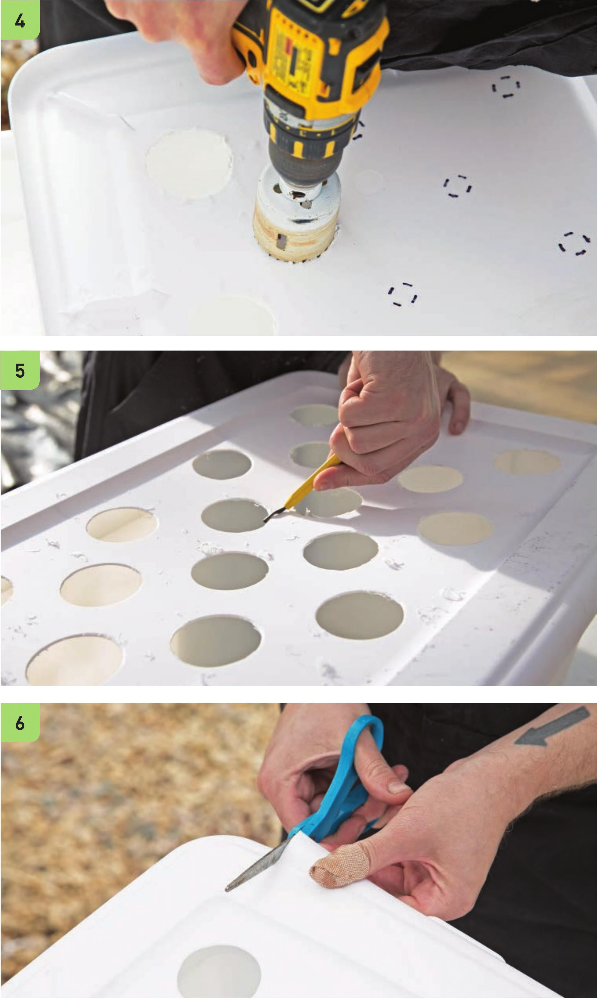

4 Wearing work gloves and eye protection, use a 2" hole drill bit to create holes for the net pots. 5 Clean the edges of the drilled holes with the deburring tool. 6 Create a very small flap on the side of the lid. This will be used for the pump's power cord. Sometimes this flap can be a source of leaks, so another option is drilling a hole in the lid for the cord to pass through and using a foam insert around the cord to cork the drilled hole. 110 DIY HYDROPONIC GARDENS
